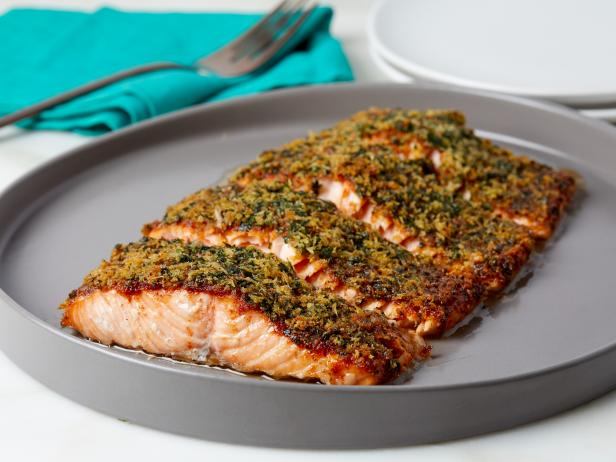

Salmon in the oven
Salmon in the oven

Ingredients
1 fillet of salmon, skinned (tails are cheapest) |
Any veggies you like: tomatoe, peppers, zucchinis, etc |
Liquid cream |
Black pepper |
Salt |
Method
1)Put the salmon in an oven dish - add chopped veggies and cream on top with salt and pepper |
2)Grill on a high heat for about 25 min. If it is a thick fillet, it will take longer to cook through, always check if the middle if cooked. |
3.)You can serve it with rice or pasta |